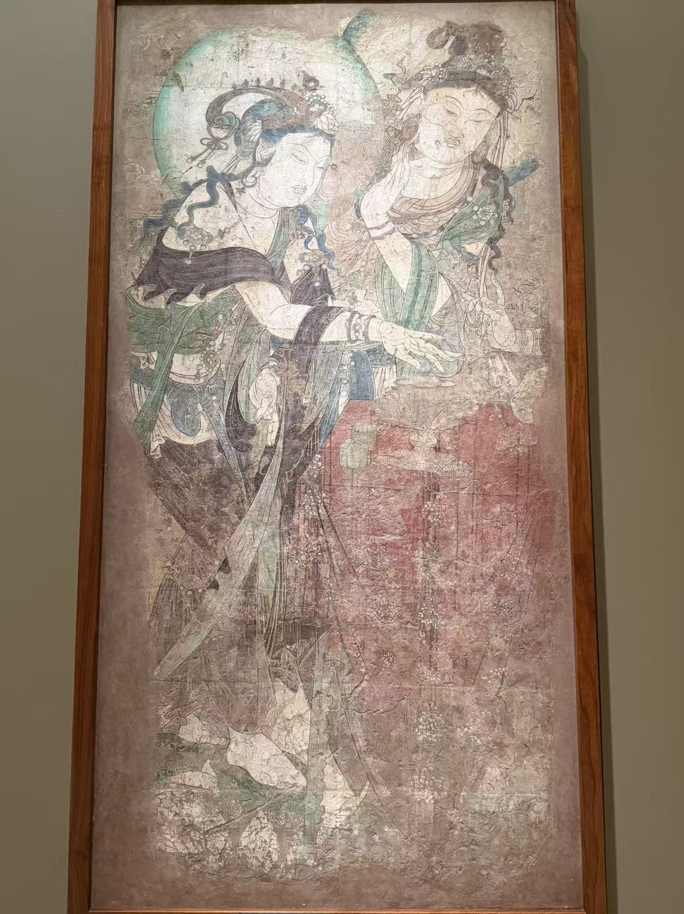

五代 / 寺院壁画
双菩萨焚香图
看画
点击照片可放大；有多张照片时，可以切换查看。


作品札记
两位菩萨的手都朝香炉聚拢：一位揭盖，另一位投香。沿着这些手势再往右看，画面边缘还留着第三个人物握珠串的手，原来的场面显然不止眼前两人。细长的手指、弯曲的腕部与飘带，把焚香这个动作画得很缓。
高足香炉与桌上的两只带盖盒，不只是填补空白的器物。馆方将它们的形制与唐代银器相联系，也把这幅图放在重视仪式的密教环境中理解。人的身体虽被衣饰包裹，整个场面的中心却是香炉上方那一小段正在发生的动作。
1950年，卢芹斋将它赠予纳尔逊。随后，地仗上的一处破口露出了更早的颜色；修复人员发现，这层壁画覆盖着另一幅观音像。两层分离后，原来叠在一起的画，如今各有一个馆藏编号：50-64A与50-64B。
资料：纳尔逊：双菩萨焚香图